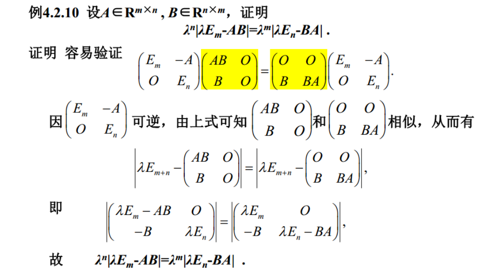

第四章 矩阵的特征值和特征向量
一、基础知识
相似矩阵：存在可逆矩阵P使得，那么A和B就是可逆矩阵
其实相似矩阵P是：如果一个基底通过矩阵P可以过渡到另一个基底，并且第一个基底上有一个线性变换T，这个线性变换的矩阵表示是A，那么这个线性变换在第二个基底下的矩阵就是，就可以表示不同坐标系（基底）下的同一个线性变换（见《线性代数讲义》P173 定理6.4.4）
相似矩阵的性质：

特征值与特征向量
特征值：满足
其实这个特征值与之前我们离散数学中计算递推公式使用的特征值是一个东西。
计算特征值与特征向量的步骤：
- 计算，求出
- 对每个，代入解齐次方程组
- 属于 的全部特征向量就是方程的基础解系。
通常一个特征值可能对应多个特征向量，但是每个特征向量只能对应一个特征值。并且必须称呼为“属于a的特征向量”。
矩阵的特征值的个数（包括多重特征值）就等于矩阵的秩。有时候求阶抽象矩阵的特征值时我们可以利用这一点来说明所找到的几个特征值就是它的全部特征值。
互为共轭的两个特征值的特征向量也共轭。
定理：如果f(x)为x的多项式，矩阵A有特征值，那么f(A)有特征值f()
同时，逆矩阵的特征值为原来特征值的倒数。
这个定理可以用来将某些复杂式子的特征值表示出来，结合复杂式子题目给的特性就可以求出这些式子的特征值，从而求出原始矩阵的特征值。
如果有非零解，那么A有0特征值（一定可以找到一个非零向量，使得A =）
定理：相似矩阵具有相同的特征多项式，特征值也相同。但是具有相同的特征多项式不等于相似。
矩阵的迹
矩阵的迹：矩阵对角线元素和，同时也等于矩阵所有特征值的和
矩阵的行列式的值同时也等于矩阵所有特征值的积。
注意：如果是n重特征值，用这种方法计算矩阵的迹或行列式时需要把这个特征值计算n次。
相似矩阵的迹和行列式都相同。利用这一点就可以很快速的做出两个带参数矩阵相似的题目，可以分别求出两个矩阵的迹，相等，可以迅速消去第一个参数。
定理：如果A是一个块对角矩阵（分块矩阵，但是只有对角线有块），那么A的特征值就是A中每个块的所有特征值的汇总
AB与BA具有相同的特征值，以及它们的迹也相同，证明过程如下：

二、常用技巧
-
通常我们求的时候都不是直接将行列式拆开，而是用一些技巧来因式分解，例如行列式凑几个0元素，然后使用按行列展开，或者把一行列加的每个元素相同，从而提取出来它们。
-
当要求一个矩阵的n次方时，我们可以考虑将其对角化，然后列出等于，这样的话它的n次方就可以直接使用来表示。
如果想要求的特征值，那么可以使用经典式子，变形成，利用f(A)特征值的定理就可以得到的特征值就是的特征值乘以A的行列式
-
有的时候为了求特征向量，需要找出线性方程组的线性无关解。如果一个矩阵右乘的是一个矩阵而不是一个向量，那么也可将这个右边的矩阵看成很多个列向量。例如，那么就等于，也就可以看成，假设它的结果是，那么我们就可以把 分别看成是的结果。
-
同时，如果每个可以表示成，那么可以从这个式子很快就能看出矩阵的特征值。例如如果，我们就可以马上得到矩阵的三个特征值为2,3,4，并且对应的特征向量就是.
-
如果不只是对应，那么也可以进行转化，例如等于的是，也是可以解的，只不过不能一眼看出来。我们可以用矩阵表示线性变换，即把β的矩阵看成，我们可以证明矩阵A是和相似的（），所以求A的特征值也就是在求的特征值。
-
一定要记住正交矩阵的定义：就是满足的矩阵。所以拿到一个正交矩阵不能只知道它不同列向量之间相互正交。
-
通常，如果A是实对称矩阵，那么A*也是实对称矩阵，你可以使用将A对角化的方式来证明
-
如果想要表示出一个矩阵每一行的元素之和，你可以构造一个全1向量，把它右乘这个矩阵，最后得到的向量的每个元素就是每一行的和。
-
一般来说，如果你可以从一个矩阵的多项式（比如）通过将矩阵化为特征值的多项式()求出特征值的话（这里就是-1和0），那么求出来的特征值就是这个矩阵的全部特征值（可以证明，如果还有其他特征值，那它就不会满足这个方程）。但是特征值的重数是不确定的，不能因为看到类似就认为特征值0是二重特征值，因为这根本不是它的特征多项式，只有特征多项式才可以判断重数。
-
如果已知A的特征值，想要求A的多项式的行列式或者秩的话，可以直接转化为特征值来算。可以很轻易算出A的多项式的特征值，然后行列式的值就是特征值的乘积，秩就是非零特征值的个数
-
证明可对角化的方法就是要能够找出每个特征值对应的线性无关特征向量的个数总和大于等于矩阵的阶数n，也就是要证明对于每个特征多项式，最后求出来的齐次方程的基础解系向量个数之和为n
-
注意一个普通矩阵对角化和实对称矩阵对角化之间的区别：普通矩阵和实对称矩阵的可逆矩阵P求出来之后都不需要单位化，因为不管是否单位化，它们最后都可以将矩阵变为同一个对角矩阵。但是实对称矩阵中P可以成为正交矩阵。如果想让P成为正交矩阵，就需要先对每个向量单位化再构成矩阵P（如果不单位化就不一定是正交矩阵，可能行向量组就不正交了）。当然，如果题目没有要求P一定是正交矩阵，就可以不用单位化。
-
注意：实对称矩阵的对角化不可以随便使用合同变换法。因为合同变换法它根本就不是用于实对称矩阵对角化的方法，而是用于二次型化标准型的方法。合同变换不仅会改变矩阵的特征值，它本身解出来的P也不是一个正定矩阵。合同变换法不会改变的只有矩阵的秩、行列式、正定性（正负特征值的个数）
-
当需要求一个矩阵的n次幂时，我们可以考虑将矩阵对角化，这样的话它的n次幂就只相当于内部对角矩阵的n次幂。例如，那么
-
如果题目中说到一个矩阵是实对称矩阵，你就需要第一时间想到它可以对角化，写出的形式，其中D为对角矩阵，P为正定矩阵（）
-
设x是一个n维向量，那么就表示向量x的第i个分量的平方乘以对角矩阵的第i个对角元素(a_i)之和，即。实际上如果中间的矩阵不是对角矩阵的话，它也是一个二次型矩阵，最后结果的第(i,j)个元素就是乘以矩阵的第(i,j)个元素
-
当一个矩阵的特征值全为0的话，它其实只能是零矩阵。因为特征值全为0，就说明矩阵的秩为0，所以为零矩阵。当然，零矩阵本身是可以对角化的
-
一般，矩阵A的多项式f(A)的特征向量同时也是矩阵A对应的特征值的特征向量。因此，假如知道了A的特征值和特征向量，那么f(A)的特征值就是将每个A的特征值λ替换f(A)中的A，对应的特征向量就是A原来输入与λ的特征向量。